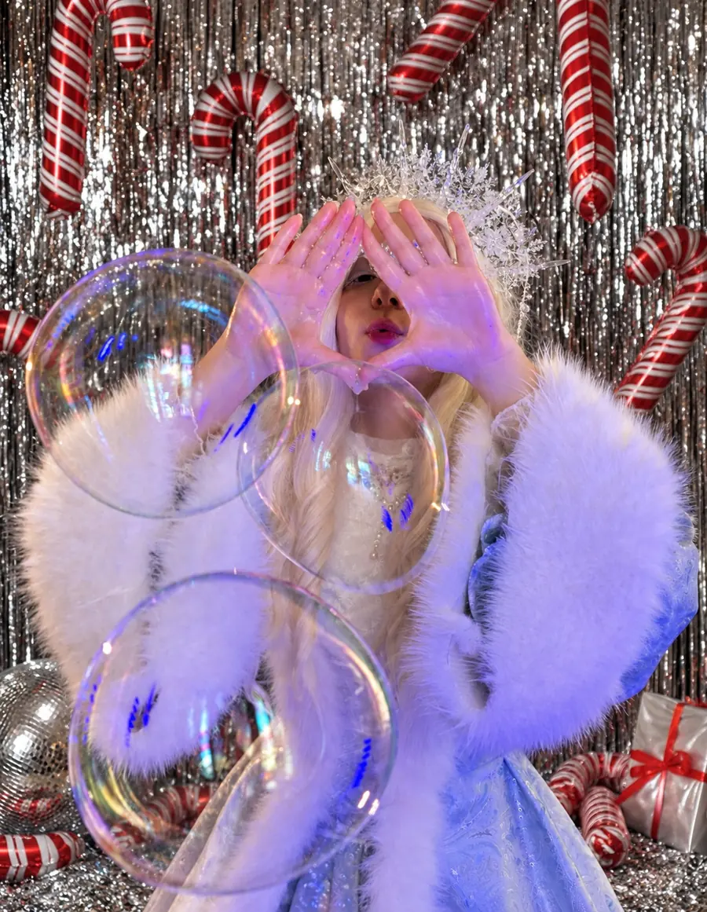

Переливающиеся
пузыри
Шлейфы, дымные пузыри
и необычные трюки
Шоу мыльных пузырей

Маленькие чудеса. Большие впечатления.
Поймать мгновение волшебства
Переливающиеся пузыри, необычные трюки и участие гостей в шоу. В финале каждый сможет оказаться внутри гигантского пузыря и сделать фотографии на память.
Шлейфы, дымные пузыри
и необычные трюки
Участие гостей
в настоящем шоу
Каждый — внутри
гигантского пузыря
Спланируйте своё чудо
Выберите образ — и сохраните шоу в своём празднике.